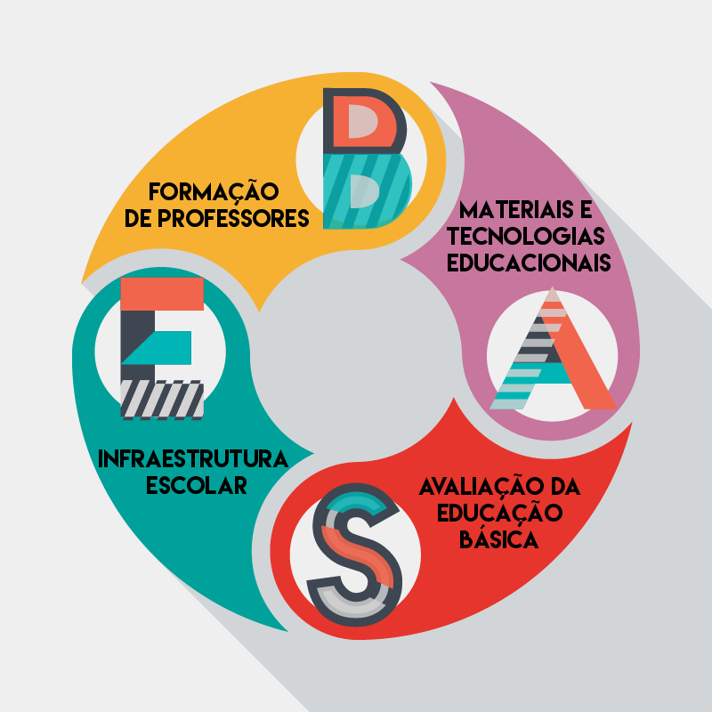

Gestão após gestão, o tema da educação segue sendo uma preocupação central no Brasil. Com um modelo federativo bastante complexo; fendas profundas na regulamentação das normas de cooperação entre estados, municípios e o governo federal; e a prevalência da visão patrimonialista entre os setores da gestão, o país encontra muitas dificuldades em desenvolver planos educacionais que eliminem as desigualdades e agreguem valores libertadores aos cidadãos dentro das escolas de ensino básico e das universidades.
Quando pensamos nos “problemas da educação”, parece haver uma associação espontânea com a falta de escolas e com a baixa qualidade do ensino nas escolas públicas. Apesar da relação feita com muita naturalidade, o cenário educacional brasileiro mudou bastante nos últimos vinte anos, no que diz respeito à oferta educacional. Hoje em dia, embora não seja garantido a todos os brasileiros, o acesso ao ensino é muito mais abrangente do que era no começo dos anos 2000. Isso graças às relações orgânicas entre diferentes setores da sociedade que trabalham para que as crianças em idade escolar estejam efetivamente matriculadas.
Além disso, os programas de redistribuição de renda, o aumento do número de instituições de ensino, a prática da política de cotas e o fortalecimento de programas de financiamento do ensino superior são alguns dos projetos que colaboraram para a redução das desigualdades no acesso à educação. Todavia, a educação no Brasil segue com insucessos, como a supressão e hierarquização cultural e o abatimento das capacidades comunicativas e reflexivas de crianças e jovens.
No cenário das universidades brasileiras, mais do que nunca a temática da educação, associada a outras áreas, permanece nuclear. São milhares de teses de conclusão de curso e de pós-graduação que se dedicam a explorar as possibilidades de mudança dos processos educacionais vigentes no país. No entanto, ilogicamente, as reflexões levantadas pelas pesquisas acadêmicas têm sido cada vez menos consultadas para a concepção de políticas públicas. Em contrapartida, consultores da iniciativa privada encontram no Ministério da Educação um espaço privilegiado para colocar em prática suas estratégias formativas e avaliativas.
Em meio a todos os avanços e contradições das propostas e investimentos na educação nacional, a proposta da Base Nacional Comum Curricular foi umas das exigências colocadas pela Lei de Diretrizes e Bases da Educação Nacional, revista em 2013; pelas Diretrizes Curriculares Gerais da Educação Básica, aprovadas em 2009 e pelo recente Plano Nacional de Educação, projetado em 2014, pelo governo Dilma, governo este que escolheu como slogan do segundo mandato o mote “Pátria Educadora”. Para o Ministério da Educação, o documento da Base norteará os rumos da formação de cidadãos ao passo em que determinará os conteúdos mínimos a serem ensinados nas escolas brasileira de educação básica.
A Base começou a ser construída a partir da convocação de um Comitê de assessores e especialistas formado por representantes de diversos estados e municípios. Em sua maioria, eram professores universitários, pesquisadores e educadores de diferentes áreas dentro da Educação Básica e técnicos das secretarias de educação.
A esses profissionais, foi depositada a responsabilidade de redigir um documento preliminar da Base Nacional Comum Curricular, que foi disponibilizado para consulta pública pelo MEC entre setembro de 2015 e março de 2016. No portal da Base, espaço disponibilizado pelo Ministério da Educação para abrigar as contribuições da sociedade, os cidadãos puderam escrever críticas e sugestões ao documento. No total foram cadastrados 305.569 indivíduos, 4.298 organizações e 45.049 escolas distribuídas por todo o Brasil.
Com a intenção de mobilizar agentes nos estados, o MEC, através da Diretoria de Currículos e Educação Integral da Secretaria de Educação Básica (DICEI-SEB) promoveu e também participou de diversas reuniões, seminários e fóruns, que foram realizados em escolas, universidades, sindicatos e outros espaços abertos para o debate. Durante o período aberto para consulta pública, técnicos do MEC estiveram em aproximadamente 700 reuniões nas cinco regiões do Brasil e, além da consulta, o debate público em torno da primeira versão da Base envolveu também a solicitação de pareceres de leitores críticos que não integravam o Comitê de Assessores e Especialistas.
Ana Luiza Fontana Novo, educadora formada pela Universidade Estadual de Campinas - Unicamp, é diretora da escola de educação infantil EMEB Maria Aparecida de Souza Almeida Ramos, localizada em Jundiaí, a 60 quilômetros da cidade de São Paulo. A escola que Ana dirige é referência no ensino devido aos projetos culturais desenvolvidos com a comunidade. Ana Luiza explica como foi o primeiro contato dos profissionais da escola com a Base:
“A partir de 2014, a secretaria de educação do município começou a organizar uma série de debates que reuniam professores, coordenadores, gestores e funcionários para discutir novos olhares sobre a forma de educar. Questionamentos sobre a infância, sobre como a escola deveria ser vista e como transformá-la foram levantados e as propostas foram lançadas. Em um segundo momento, quando a Base estava sendo construída, gestores de todas as escolas municipais receberam um e-mail direto do Ministério da Educação fazendo um convite à leitura crítica da Base Nacional”, conclui.Por fim, os gestores das escolas municipais de Jundiaí foram instruídos pela Secretaria de Educação a debaterem a Base junto com os pais e com o restante da comunidade escolar, por meio do conselho da escola, formado por pais eleitos para representarem os anseios dos responsáveis pelas crianças.
Ana aponta, no entanto, que o alcance dos debates foi bastante díspar nas diversas regiões do país, o que é preocupante na perspectiva da construção de uma proposta democrática e que contemple sugestões diversas. “Em Jundiaí, o grupo de profissionais que já trabalhava conosco nos cursos de formação de professores atuou diretamente na construção da Base. Por isso, nós tivemos a oportunidade de aprofundar o debate, mas em outras cidades a discussão foi mais rasa”
INFOGRÁFICO/// DESCOBRIR QUAL ÉDepois dos debates e contribuições populares por meio do portal da base, os resultados foram analisados por equipes de pesquisadores da Universidade de Brasília (UnB) e da Pontifícia Universidade Católica do Rio de Janeiro (PUC-RJ) e resumidos em relatórios encaminhados novamente ao Comitê, que elaborou a segunda versão da BNCC. A partir de 23 de junho de 2016, começaram os seminários estaduais para a discussão da versão mais recente do documento com professores, secretários e gestores escolares municipais que devem avaliar os objetivos de aprendizagem presentes na Base. Passado o período de discussões, cada Estado deverá enviar um relatório com as contribuições dos participantes ao Conselho Nacional de Secretários de Educação (Consed) e à União Nacional dos Dirigentes Municipais de Educação (Undime). Até o final de agosto, um único relatório deverá ser enviado ao MEC para mais uma etapa avaliativa. A Base deverá entrar em vigor no prazo de dois anos.